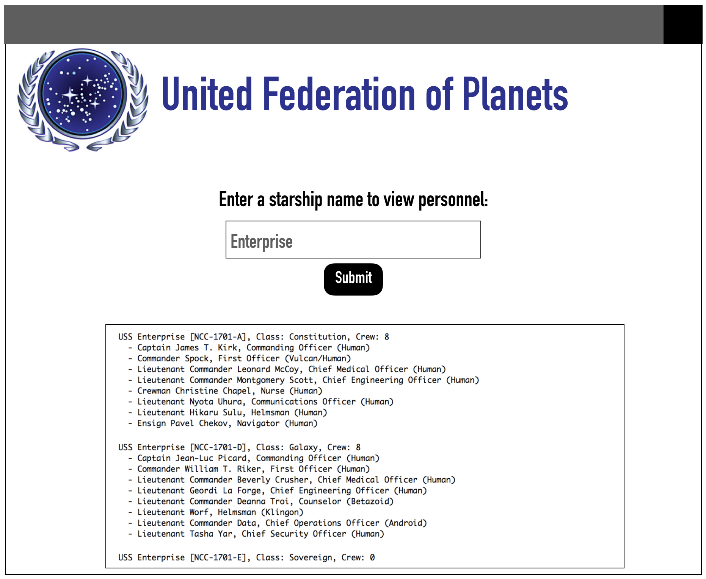

Your program will show a view similar to the one shown below when the app is run:

This view will be the Main.fxml.
When the user first loads the app, both the text field and the text area will be blank. The user will enter a name into the text field and click the submit button, which will populate data into the text area in the lower half of the app.
You may customize your app how ever you choose - this includes images, fonts, colors, size of the app, configuration.
Remember to ensure your app works on all display sizes. For this lab, you can do this by making your app no larger than 800x800.
The app must have the following GUI components:
Main.java will launch the application and shown the Main.fxml.
MainController.java will need to implement the EventHandler interface, and handle any events that occur when the user interacts with Main.fxml.
When the app launches, the MainController will call on the Fleet class to load the data needed to populate the view.
All data for the app has been provided, in csv format, here:
data.zip.
Unzip this file, and place the folder at the top of your Eclipse project.
Before moving forward, take a closer look at the data in these files.
You can open them as spreadsheets, or you can view the comma-delimited format by right-clicking on them and choosing "open with > text editor".
The controller will need class variables for most of the GUI components on the view.
The model of your app will consist of 3 classes: Fleet, Starship, and CrewMember.
For each class, create class variables, constructors, all getters/setters, toString(), and any methods needed to complete the following requirements.
To be initialized, a Fleet object must have a name.
In addition, every Fleet has an ArrayList of Starship objects.
The Fleet will be the access point for the data in the remainder of the app.
The controller will call on methods in the Fleet class to access starship names, crew member information, and to load data in the files.
A Starship object must have:
A CrewMember object must have:
The remaining design of the model of this app is up to you - you may add other model classes if you find it necessary.
1. Loading and searching the data.
This part will be a responsibility of the model, and will be called by the controller.
The controller will need a method called handle, which must be connected to the Submit button on the view.
The handle method must not read data from the file!
Instead, handle calls on a method in the Fleet class to read the data from the files, creating Starships and CrewMembers as needed.
This method must be a class method, and will return a Fleet object that has been created using the data in the files.
Within the Fleet class, there will be an object method getStarshipsByName which will take in a String name of a starship and return an ArrayList of Starship objects.
In the MainController, the handle method has a Fleet object, it should use this object to call getStarshipsByName(..), passing as a parameter the text entered by the user.
2. Displaying the data on the view.
This part will be implemented in the controller, setting values to the view.
Use the ArrayList of Starships returned by getStarshipsByName(..) to populate the text area at the bottom of our view.
Always test your app thoroughly before submitting, to ensure everything is working properly.
This is our first JavaFX app, so testing will be a little different.
If you haven't implemented the search yet, you can test your app by having it always display all starships when the Submit button is clicked.
Before moving beyond this step, ensure that your output in the app matches the format of the example given above.
Next, try searching as in the example above.
Ensure all the data is loading correctly and that your data matches that given in the example image above.
Don't forget to try searching for a name that is not in our data.
Your app should not crash or show an exception in the console under this type of condition.
Instead, show a message in the text area indicating no ship of that name could be found.